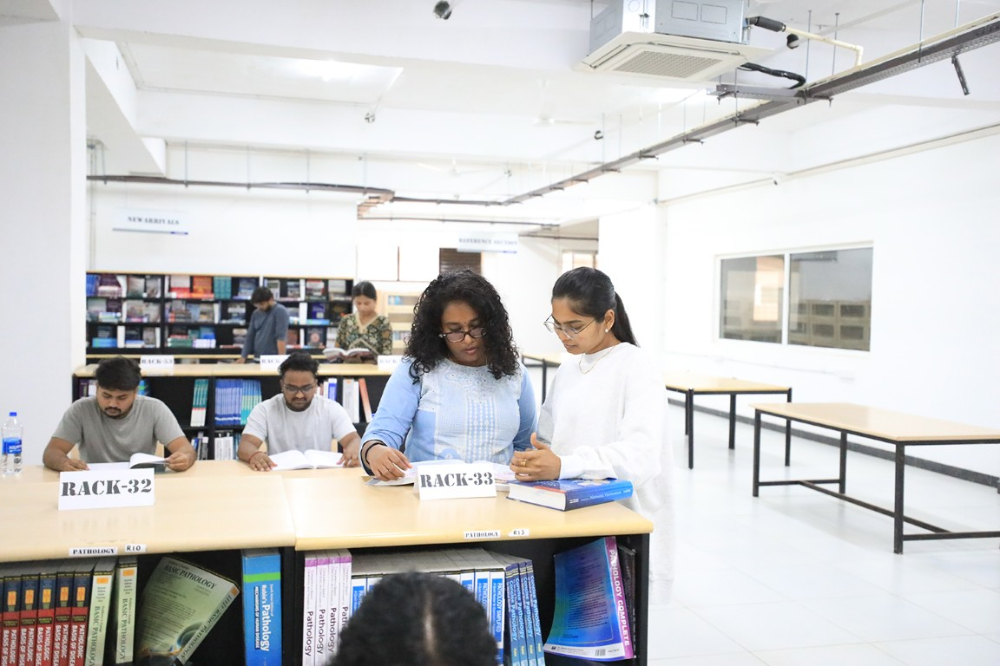

Get In Touch
Have questions about Bachelor of Technology admissions?
Share a few details and our admissions counsellors will walk you through eligibility, fees, scholarships and the application timeline — no obligation.
- Fast Response — a counsellor calls back within 24 hours.
- One-on-One Guidance — personalised help with eligibility and documentation.
- No Obligation — ask questions before you decide to apply.
Fill this in and we'll reach out shortly.



Eligibility
60% aggregate marks in Physics + Chemistry + Math of 10+2 or equivalent from a recognized board. Test Scores in JEE Main / KCET (Karnataka State Level Exam) required. Registration from https://admissions.pes.edu/ is mandatory.
Branches of Engineering
B.Tech Major
Computer Science & Engineering (CSE)
The programs of the department are designed to create globally competent manpower for the information and communication technology (ICT) industry. The students are also ready for post graduate education in the best universities across the globe. These twin objectives are accomplished by including an optimal mix of fundamental theory subjects and practical, current and industry relevant subjects in the scheme of study. The students will build specialist knowledge in the field of applied computer sciences with the flexibility to follow their interest through the choice of varied optional modules, courses and electives.
Electronics & Communication Engineering (ECE)
The curriculum is integrated with project-based learning and this attempt has resulted in high levels of problem-solving skills in students. The passionate involvement of highly experienced faculty has aided students to explore newer domains of learning. In addition to regular foundation, core and elective courses of ECE, a distinctive feature of the program is the offering of Special Topic courses all through the semesters. These courses are designed to provide a project based hands-on and problem-solving skills to students in varied domains. ECE students have the benefit of working with the best of the faculty from within as well as from the Industry.
Computer Science & Engineering - Artificial Intelligence & Machine Learning (CSE-AIML)
This program has a robust pedagogy and uses out of the box assignment and project ideas to help students master core concepts and skills, digital learning, excellent faculty interactions and mentorship, industry guest lectures, industry/research based one-year internships to gain practical knowledge and explore the real world, peer learning via PESU I/O (peer to peer collaborative platform), a one-year Capstone Project to enhance and shape their research skills.
Students will acquire hands-on experience of working with various AI and Machine Learning algorithms and tools on real data sets and real-world scenarios. Each course in this program is carefully designed to impact specific knowledge and skill set that is highly valued by the Industry. The program offers strong preparation in statistical modeling, data visualization, machine learning, microprocessors, analysis of massive data sets, and data acquisition. The program focuses on areas such as cloud computing, big data, deep learning and discusses various AI methods based in different fields like IoT, topics in explainable AI. Program also emphasizes on the need to address the risk of confidential data being maliciously collected, stored, and disseminated while making use of the mentioned technologies. Hence, there is special focus on Cybersecurity related courses.
At various phases of the program, senior data scientists will be invited to share their experience of solving real life Machine Learning problems.
Mechanical Engineering (ME)
Mechanical engineers are uniquely placed to play key roles in wide range of industries: automotive (from the car chassis to its every subsystem—engine, transmission, sensors); aerospace (airplanes, aircraft engines, control systems for airplanes and spacecraft); micro-electromechanical systems, or MEMS (sensors, actuators, micro-power generation); energy conversion (gas turbines, wind turbines, solar energy, fuel cells); environmental control (HVAC, air-conditioning, refrigeration, compressors); automation (robots, data and image acquisition, recognition, control); manufacturing (machining, machine tools, prototyping, micro-fabrication).
Through clever use of analysis, modeling, design, and synthesis, they solve important problems with good business potential.
Mechanical engineers’ familiarity with various mathematical and physical laws and workmanship make them apply their skills and knowledge in multiple areas. They have even been extremely successful with computer applications, IT and software companies.
The placements of the students of the department has been exemplary with engineering equipment companies and software companies include the leading Indian and multinational firms.
Biotechnology Engineering (BT)
Biotechnology is the culmination of Life Sciences and Engineering resulting in technologies. These are exciting times for Biotechnology as it is considered the area that can solve sustainability issues for the human mankind. One can look for alternative renewable energy sources, mitigate climate change, produce medicines, discover new drugs, treatment technologies for health, tackle the requirements of meeting the hunger of billions of people, treat water and waste water. The Vision of the Department is to create graduates who can solve biotechnological problems through innovative solutions and integrated approach.
Electrical & Electronics Engineering (EEE)
Students of electrical and electronics engineering are offered both theoretical and practical knowledge in a wide variety of subjects, including devices, power electronics, control theory; signal processing. The board field deals with the science and technology involving electricity, electronics, and electromagnetism, to design, construct, and maintain products, services, and information systems. The department offers courses in traditional areas like generation, transmission and distribution of electricity as well as new age applications in electronics ranging from telecommunication to computers, nano-technologies and microcontrollers.
Dual Degree
B.Tech-M.Tech Switch Program
Students can opt for a B.Tech+M.Tech degree switch program in their 3rd year of study while pursuing their B.Tech degree. This program helps students to pursue their M.Tech degree in a branch or specialization which is different from their B.Tech degree, provided the student has done minors in the desired branch or specialisation during their B.Tech program.
Example: A student who has studied B.Tech in Electronics & Communication and who has done his minors (please see the major/minor explanation in the next section) in Computer Science, can complete M.Tech in computer science, specifically, the student does 4 years of Electronics & Communication with minors in Computer science + 1 year of M.Tech in Computer Science + 1 year of compulsory internship in Computer Science. This will give him/her a B.Tech Degree in Electronics & Communication and an M.Tech Degree in Computer Science.
Flexible Learning
Major Minor Concept
While pursuing your B.Tech degree with us, a student selects a branch of engineering. This is called your major area of specialization. In addition to your major area of study, a student can also elect as a choice to pursue a minor area of specialization or branch which is different from your major area of study.
In securing admission to the Masters program abroad in the field of their minor. In our example the EEE student could pursue a Masters degree in computer science engineering with less or no requirements of pre-requisites
Help them better prepare for a cross functional diverse world of the future
Help in placements in companies in both the major and minor fields. In our example the EEE student could be looked by IT sector for opportunity as well as the electrical core sector companies
Financial Support
Merit scholarships, awarded on performance
Over ₹140 crores in merit scholarships have been given to PES University students since 2014.
Merit Scholarships
Awarded on CGPA / SGPAProf. MRD Scholarships
Merit Certificate + 50% Tuition Fee Refund for Top 5% of the Students based on their CGPA.
Prof. CNR Rao Scholarships
Merit Certificate + 40% Tuition Fee Refund for the next 20% of the Students based on their SGPA.
Distinction Awards
Merit Certificate for Students securing 7.75+ SGPA.
PES Loyalty Program
Awarded on family / institutional ties, every year of studyPES Employees
Children of full-time staff, 5+ years employment.
PES Institution Students
Graduates of any PES institution or sister concern.
Siblings of Students
Siblings of currently enrolled PES students.
Alumni Family
Siblings and children of PES University alumni.
University Highlights
Recognition beyond the programme
The accreditations and rankings behind PES University as a whole.
University in Karnataka
Among new universities under 5 years, ranked by KSURF.
NAAC Accredited
PES University holds NAAC's top-grade accreditation nationally.
B-School in Karnataka
Times of India B-School Rankings, 2021.
Most Preferred B-School
Second only to IIM Bangalore among B-School aspirants, per Times of India.